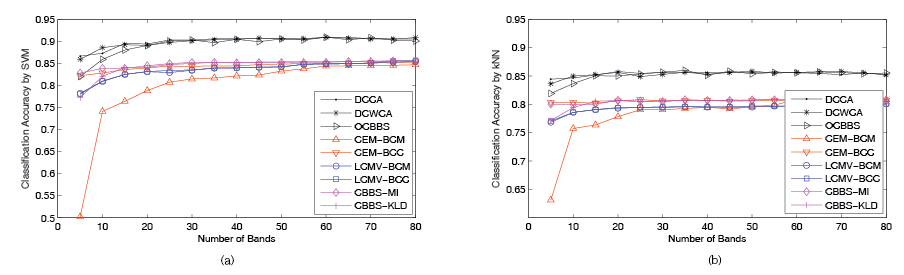
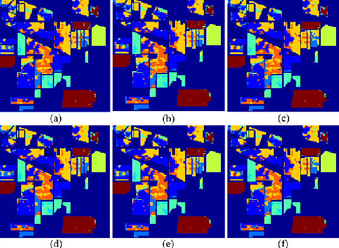
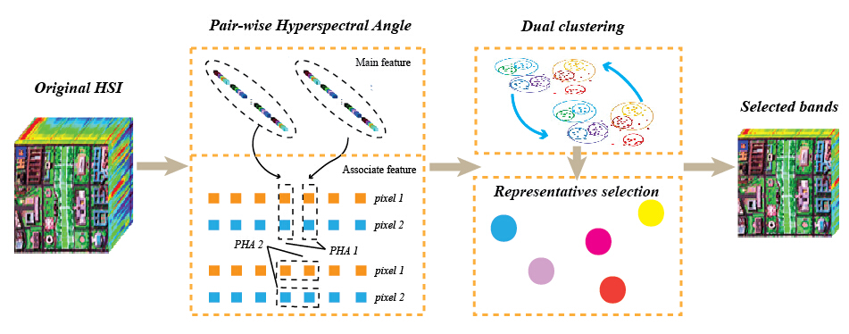
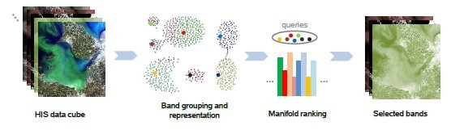
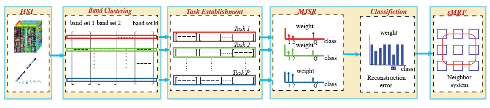

教育及工作经历
| • 2019/05 - 至今 | 中国矿业大学信息与控制工程学院，副教授，硕士生导师 |
| • 2018/06 - 2018/08 | 南洋理工大学（新加坡）计算机科学与工程学院（LILY Lab），客座研究员 |
| • 2018/03 - 2019/04 | 安徽大学电子信息工程学院，副教授，硕士生导师 |
| • 2017/09 - 2018/03 | 不列颠哥伦比亚大学 & 皇后大学（加拿大）电气与计算机工程系，博士后 合作导师：加拿大首席科学家 Dr. Purang Abolmaesumi |
| • 2013/08 - 2017/09 | 不列颠哥伦比亚大学（加拿大）电气与计算机工程，博士 导师：加拿大工程院院士、IEEE Fellow Dr. Z. Jane Wang |
| • 2010/08 - 2013/08 | 中国科学技术大学生物医学工程，硕士 |
| • 2006/09 - 2010/06 | 安徽大学微电子，学士 |
研究方向
机器学习与人工智能，统计信号处理，图像处理等
主持/参与科研项目
|  | 生理信号的欠定联合盲源分离研究 主持，国家自然科学基金 |
|  | 面向生理信号的欠定联合盲源分离关键技术研究 主持，江苏省自然科学青年基金 |
|  | 基于机器学习的音谱转换方法研究 |
|  | 高通量煤质数据的特征信息捕捉及其建模中的关键技术研究 |
|  | 智能多模态生鲜肉高通量品质鉴定系统研发 |
Sparse Signal Processing and Modeling of High Dimensional Spatial-Temporal Data |
学术/社会兼职
| • 大温地区公派学生学者联合会主席 (2014/10 - 2017/10) |
| • 国际学术期刊客座编委 (Journal of Healthcare Engineering) |
| • 国际 SCI 期刊审稿人（IEEE TSP, IEEE TCASII, IEEE TSMCS, IEEE ACCESS, IEEE SPL 等） |
| • 国际学术会议 (EI检索)技术委员会委员 (KDBD2020, ICCSE2018, ICAA2018, SNCC2017, IWCMC2017等) |
发明专利及软著
| • 基于帧差法与 3D 卷积神经网络的矿井水泵房漏水检测方法 (排名第一，实审，201910624327.9) |
| • 基于图像分割和分类的煤岩显微组分智能识别方法 (排名第一，实审，201910714652.4) |
| • 基于核函数优化的甘草近红外光谱分析模型构建方法及甘草质量评价方法 (排名第三，实审，201910546901.3) |
| • 基于计算机视觉的矿车字符检测与识别软件 V1.0 (排名第五，2020SR0248029) |
部分期刊论文
- [IEEE J. ] L Zou, X Zhu, C Wu, Y Liu, L Qu, Spectral-Spatial exploration for hyperspectral image classification via the fusion of Fully Convolutional Networks, IEEE Journal of Selected Topics in Applied Earth Observations and Remote Sensing, 2020, 13, 659-674. (中科院 2 区)
- [MDPI J. ] L Qu, C Wu, L Zou∗, 3D Dense Separated Convolution Module for Volumetric Medical Image Analysis, Applied Sciences, 2020, 10(2), 485. (中科院 3 区)
- [IEEE J. ] L Zou, X Chen, G Dang, Y Guo, ZJ Wang, Removing Muscle Artifacts from Simulated EEG data via Underdetermined Joint Blind Source Separation, IEEE Transactions on Circuits and Systems—II: Express Briefs, 2019, 67(1), 187-191. (中科院 2 区)
- [MDPI J. ] H Wang, M Lei, M Li, Y Chen, J Jiang, L Zou∗, Intelligent Estimation of Vitrinite Reflectance of Coal from Photomicrographs Based on Machine Learning, Energies, 2019, 12(20), 3855. (中科院 3 区)
- [MDPI J. ] M Lei, Z Rao, M Li, X Yu, L Zou∗, Identification of Coal Geographical Origin Using Near Infrared Sensor Based on Broad Learning, Applied Sciences, 2019, 9(6), 1111. (中科院 3 区)
- [IEEE J. ] L Zou, X Chen, G Dang, Y Guo, ZJ Wang, Removing Muscle Artifacts from Simulated EEG data via Underdetermined Joint Blind Source Separation, IEEE Transactions on Circuits and Systems—II: Express Briefs, 2019, 67(1), 187-191. (中科院 2 区)
[↑TOP]
- Y. Yuan, Q. Wang, and J. Lin, “Dual Clustering Based Hyperspectral Image Band Selection via Neighborhood System Analysis,” 201510072842.2, 2015.
[↑TOP]
Skills and Student Titles
• Program: Proficient in Matlab, AI, LaTex, grasp C/C++, PS, OpenGL, github, HTML5
• Monitor of grade 2013
• Teaching Assistant for CPEN 211, 09/01/2016-12/30/2016
• Research Assistant, 09/01/2016-07/01/2020
[↑TOP]